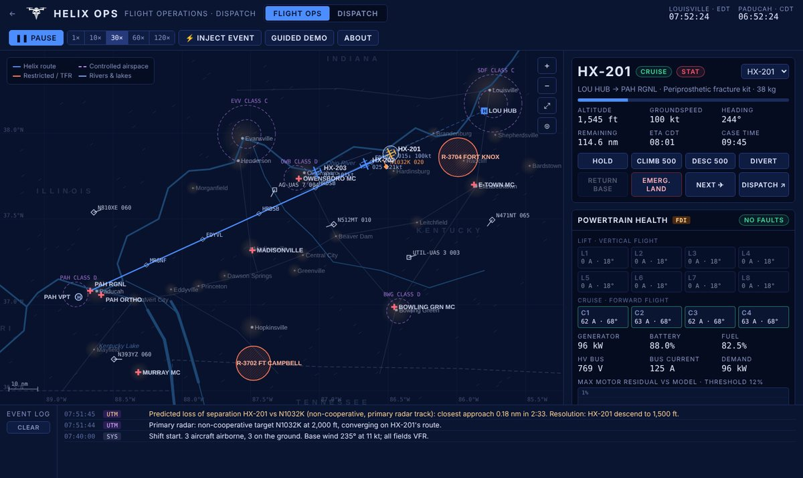

Tully Njoroge
MBA in Finance and Entrepreneurship. I like hard problems, the people behind them, and turning both into something that works.
The work
Three areas, one project each so far. Pick a window.

Helix Logistics
A drone-delivery startup built from NASA technology, with a flight simulator you can fly and try to break.
Explore →Crummer Truist Portfolio
The utilities call and two BUY cases I made for a student fund that invests real money.
Explore →H-1B Employer Research
Mapping employers and job markets so a search starts with evidence, not guesswork.
Explore →Hi, I'm Tully.
I like solving problems, including the ones where I'm not the expert in the room yet. I studied psychology and sociology, so I tend to start with the people: how they make decisions, what they actually need, and why the obvious fix sometimes doesn't stick.
From there I work toward a solution that holds up for the business and for the person on the other side of it. Learning a new field along the way is part of the fun. That's how an MBA student ended up planning drone logistics with NASA.
- From
- Johannesburg, South Africa
- Currently
- Management Program Trainee, General Parts & Machinery
- MBA · 2026
- Finance & Entrepreneurship, Crummer Graduate School of Business, Rollins College · GPA 3.8
- BA · 2024
- Psychology & Sociology, Rollins College · GPA 3.6
- Certification
- CFA Level I candidate
- Looking at
- Management consulting · Data analytics · Venture capital